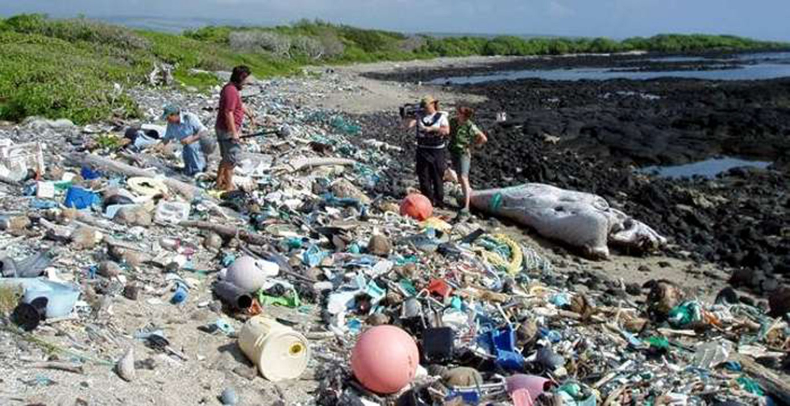

Océanos en riesgo
Los océanos reciben cada año millones de toneladas de residuos plásticos, sustancias químicas y derrames de petróleo. Estos contaminantes alteran los ecosistemas y afectan la vida de miles de especies marinas.
Además de perjudicar a la fauna, la contaminación marina también afecta la pesca, el turismo y la economía de muchas comunidades que dependen del mar para vivir.
La cooperación internacional es fundamental para reducir la contaminación y promover el uso responsable de los recursos naturales.